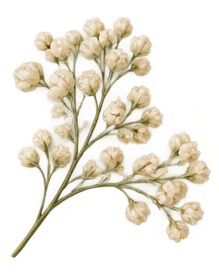
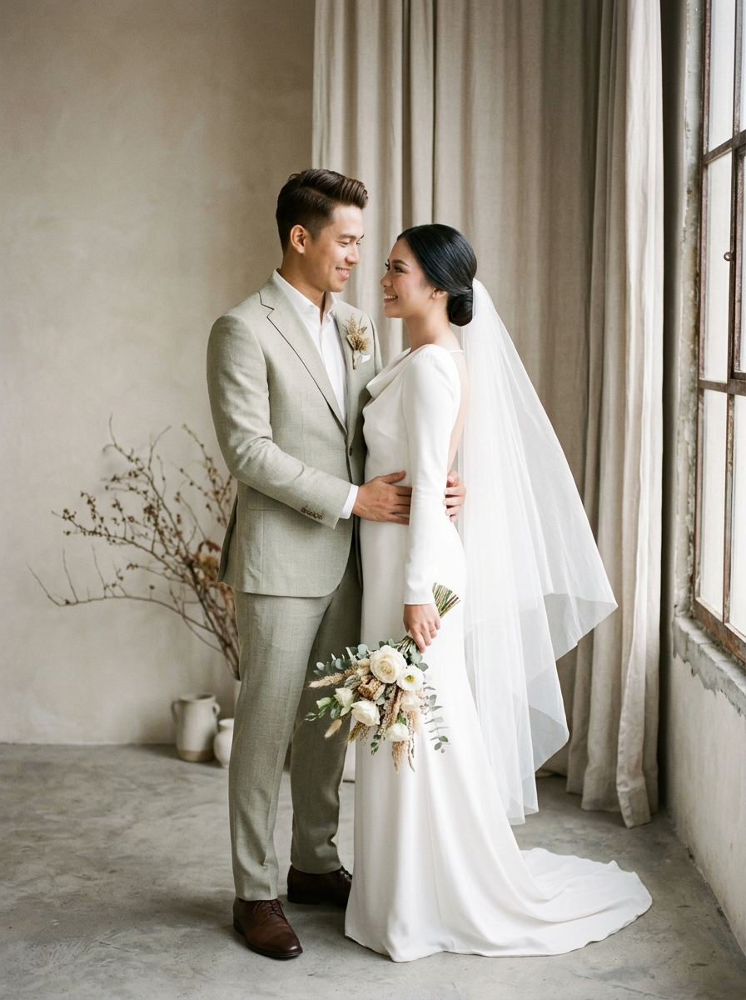

Raka & Sinta
Saturday, 24 May 2025 · Jakarta, Indonesia



"Dan di antara tanda-tanda (kebesaran)-Nya ialah Dia menciptakan pasangan-pasangan untukmu dari jenismu sendiri, agar kamu cenderung dan merasa tenteram kepadanya, dan Dia menjadikan di antaramu rasa kasih dan sayang."
QS. Ar-Rum ayat 21Mempelai Bahagia
Dengan penuh rasa syukur, kami mengundang Anda untuk menjadi bagian dari awal kisah abadi kami:
"In all the world, there is no heart for me like yours. In all the world, there is no love for you like mine."
Kisah Cinta Kami
The First Glance
Sebuah pertemuan sederhana di sebuah kedai kopi kecil di Yogyakarta yang mengubah arah takdir hidup kami selamanya.
The Commitment
Dua pemikiran menyatu dalam visi yang sama. Saling belajar, tumbuh bersama, dan menemukan kedamaian dalam setiap langkah.
The Sacred Promise
Di hadapan keluarga dan semesta, kami mengikat janji suci untuk melangkah bersama menuju babak baru yang penuh berkah.
Rangkaian Acara
Jadwal dan prosesi rangkaian pernikahan kami
Akad Nikah
Sabtu, 24 Mei 2025
Pukul 08.00 WIB - Selesai
Gedung Graha Saka, Jl. Melati No. 12, Sleman, Yogyakarta
Resepsi Pernikahan
Sabtu, 24 Mei 2025
Pukul 11.00 – 14.00 WIB
Gedung Graha Saka, Jl. Melati No. 12, Sleman, Yogyakarta
Graha Saka Yogyakarta
COORDINATES: 7°46'32.4"S · 110°22'18.9"E
Jl. Melati No. 12, Sleman, Daerah Istimewa Yogyakarta
Galeri Foto
Potret cinta dan keanggunan dalam setiap bingkai


Tanda Kasih
Doa restu Anda merupakan karunia terindah bagi kami. Bagi Anda yang bermaksud memberikan tanda kasih, dapat melalui opsi di bawah ini:
Pengiriman Kado Fisik
Kediaman MempelaiKonfirmasi & Doa Restu
Sampaikan konfirmasi kehadiran serta untaian doa Anda
Andi Saputra
24 Mei 2025Happy wedding Raka & Sinta! Semoga selalu dalam lindungan Allah SWT dan menjadi keluarga yang sakinah mawaddah warahmah.
Nadia & Dimas
24 Mei 2025Selamat menempuh hidup baru sahabatku tercinta! Bahagia selalu selamanya ya!
Merupakan suatu kehormatan dan kebahagiaan bagi kami apabila Bapak/Ibu/Saudara/i berkenan hadir dan memberikan doa restu bagi kami.
Wassalamu'alaikum Warahmatullahi Wabarakatuh
Kami yang berbahagia,
Raka & Sinta
© 2025 THE WEDDING OF RAKA & SINTA · ALL RIGHTS RESERVED